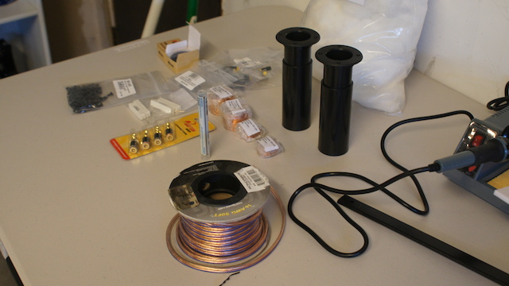
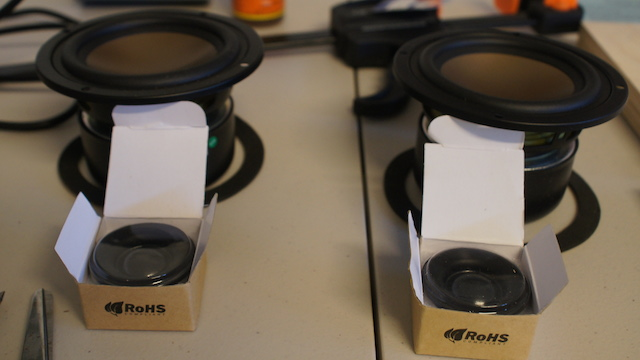
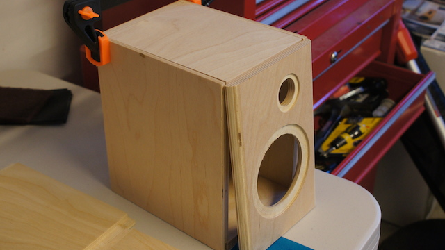
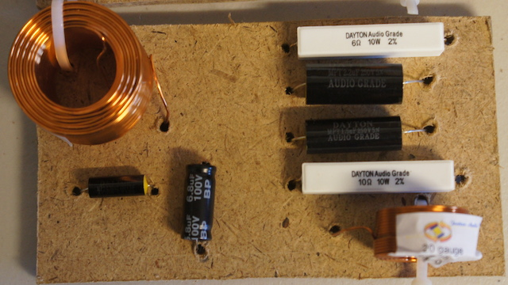
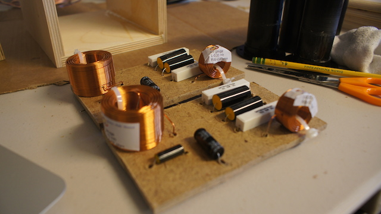
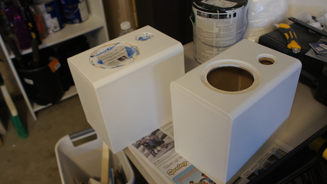
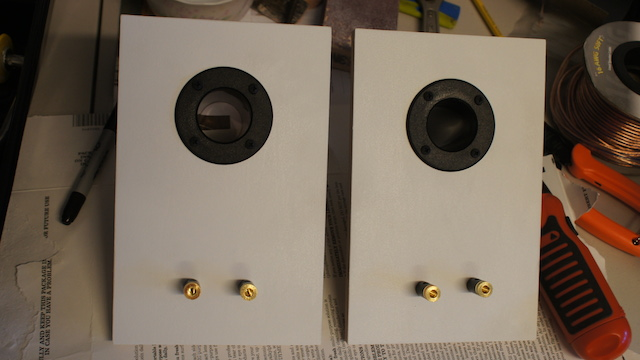
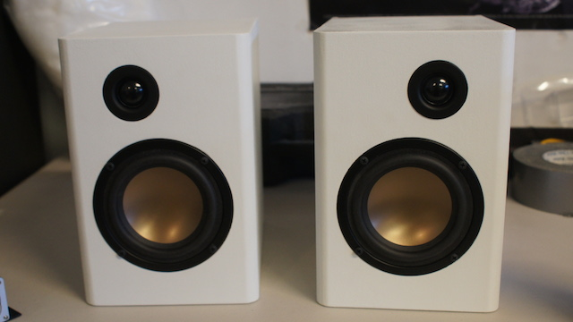
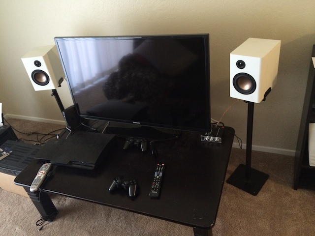

Raymond's Custom Built Speakers
These are my custom built overnight sensation speakers designed by Paul Carmody. I made these during the Summer of 2013. Overall, it was a fun learning experience. They are now being used in my apartment.
Here are some tools and the crossover parts. 
Here are the parts used to build the speakers.

The main part of the speakers: woofers and tweeters! 
Mocking up one of the speakers! 
Got them glued together..

Assembling the crossovers. 
Completed both crossovers! 
After hours of sanding and wood filler.. First coat of gloss white paint! 
Here's the backside with the crossovers in!

Worked on the port and inputs. 
And finally.. the masterpiece. 
Here they are in the apartment. 